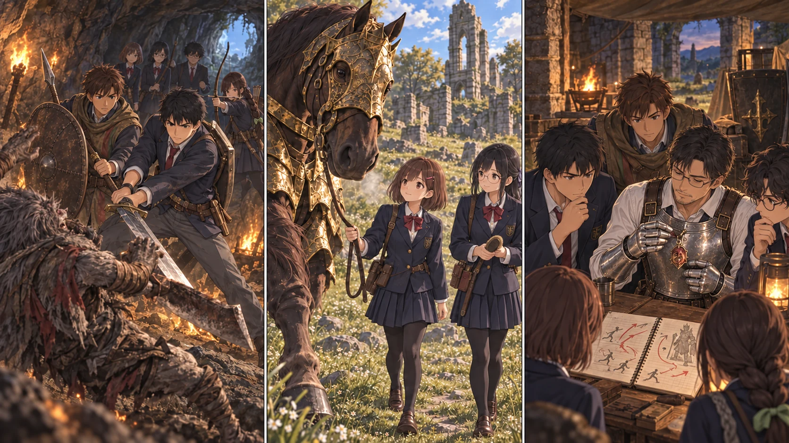

DAY64 / TURN1−74
もう一度、前に立つために。

陽太「雷に、盾ごと飛ばされました。次はそこを変えたいです」
【DAY64｜教会の作戦会議】戻れる場所を作っておいたおかげで、十三人は教会へ帰れた。昨日の戦いを、先生が一人で説明して終わりにはしなかった。陽太が盾を膝へ置く。「雷に、盾ごと飛ばされました。次はそこを変えたいです」。恥ずかしさを隠す冗談は付かなかった。
先生は自分の被弾した場所も書いた。炎を避けた直後に武器が届いた。瓶を飲む間に追われた。クララのいた側面まで衝撃が届いた。人数が多いという利点はある。それを活かすための位置と手順に、まだ穴があった。
【先読み｜重ならない守り】炎を防ぐ祈祷と雷を防ぐ祈祷を続けて使えば、両方強くなる。そう都合よくは書かれていなかった。同じ種類の防護は上書きされる。そこで先生は、炎を軽減するタリスマンと、雷への祈祷を分けて用意する案を示した。効果があるのは装備・詠唱した本人だ。仲間全員を包む防壁ではない。
先生はメリナの案内で円卓を訪ね、コリンに会った。高原へ出たことを話すと、彼もまた旅へ出る考えを語った。探しているものがあるという。先生はその事情まで自分たちの戦いの都合に押し込めず、再会する場所の手掛かりを聞いた。雷防護は、今日ここで買えたことにはならなかった。
剣と陽太の槍・盾を補修し、矢を四十本補う。欠けた刃は直せるが、鍛石を使った強化とは違う。準備したという気持ちだけで、前より強い武器になったと数えない。その一つずつを、台帳へ書いた。
【林脇の洞窟｜2d6＋5＝14】直人たち六人は、炎竜印の手掛かりを追って近場の洞窟へ入った。暗がりで足場を確かめ、見通しの先へ一人で走らない。獣人が刃を振るったとき、陽太の盾と直人の間には、互いの動きを邪魔しないだけの幅があった。
直人は攻撃を受ける盾へ重なるようには踏み込まなかった。振り切った横へ回り、大剣を振るう。花の矢が追い、悠の術が次の動きを止める。短い連携で決着した。誰も傷つかずに立っている。それは、先生が先頭にいなくてもできた戦いだった。
回収した炎竜印を、帰還後に直人が先生へ渡した。「まず、一番近くに立つ人に」。先生は礼を言い、装備する枠を確かめた。洞窟で見つけた祝福はまだ灯していない。得られた護符と、残してきた予備の光を別々に記録した。
【教会の外｜2d6＋2＝11】同じ日の草地では、美咲と澪が軍馬のそばにいた。金の馬具をまとった首が、ゆっくりこちらへ下がる。触れる場所を急に変えず、手入れを受け入れるか確かめる。引き綱を張り続けず、一歩動いたらこちらも止まった。
馬がもう一歩、ついてきた。澪は小さく息を吐き、記録に二本目の線を引いた。捕まえた、とは書かない。乗れる、とも書かない。今日は手入れと短い引き歩きを受け入れてくれた。その変化を、ちゃんと喜ぶことにした。
夕方、先生は馬の前で立ち止まった。あの背に乗って仲間のいる場所を回れたら、と考える。だが雷が落ちる戦場へ連れ出せる関係は、まだできていない。今回は徒歩で前へ立つ。馬のための時間も、ここで働く仲間に任せて続けてもらう。
教会では、雷の合図を聞いた班が互いに寄らずに離れる練習をした。先生だけを追って見ていると、別の方向から来るものを見落とす。見張る人、短く伝える人、攻撃を止めて道を空ける人。もう一度戦うために変えたのは、護符一つだけではなかった。
今回の判定記録
| 判定 | 出目 | 補正 | 合計 |
|---|
| cave | 5+4 | 5 | 14 |
| horse | 6+3 | 2 | 11 |
| base | 1+5 | 3 | 9 |
抽選前の条件 · 抽選結果